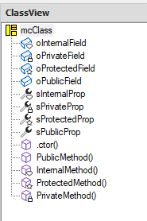
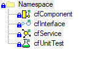

Neuheiten Framework Studio 4.8
Informationen zu aktuellen Versionen und korrigierten Fehlern finden Sie in den Release-Informationen.
Important
Dieses Dokument zeigt die Neuerungen beim Update von Version 4.7 auf 4.8. Beim Update von einer älteren Version beachten Sie bitte auch die Hinweise und Neuerungen der älteren Version (Neuheiten 4.7).
Crystal Reports abgekündigt
Crystal Reports wird nicht mehr unterstützt.
Alle Reports müssen auf DevExpress® umgestellt werden. Für noch nicht umgestellte Reports werden beim Compile der Package-Version entsprechende Warnings generiert und ausgegeben:
#warning Crystal Reports are no longer supported. Please convert the Report File to DevExpress.
Caution
Nicht umgestellte Reports können in der Anwendung nicht mehr ausgedruckt werden. Bei Customizing-Reports wird ggf. auf die DevExpress-Variante des Basis-Packages zurückgefallen, wodurch das Customizing unwirksam wird.
In der IDE können die Crystal Reports für die Migration angezeigt werden. Siehe auch Report Document Type.
SkiaSharp Library eingebunden
Die SkiaSharp Library ist eingebunden und kann zum Erstellen und Bearbeiten von Pixel-Grafiken verwendet werden.
Bei SkiaSharp handelt es sich um eine Cross-Plattform Grafik-API, welche auf der Skia-Engine von Google basiert.
Eine Referenz auf die SkiaSharp.dll und ein using auf den Namespace SkiaSharp ziehen automatisch in den folgenden Compile-Schritten:
- Services
- Components
- UnitTests
- Forms
Bisher war es üblich, für Pixel-Grafiken die Klasse System.Drawing.Graphics zu verwenden. Diese basiert auf GDI+ und wird deshalb nur auf Windows Betriebssystemen unterstütz. Für einen zukünfitgen Einsatz von .net auf z.B. Lunix-Servern muss dies abgelöst werden. SkiaSharp bietet diese Möglichkeit.
Komponentenbaukasten - Modular Components
Es wurde ein neues Element hinzugefügt. Die Doku mit allen Besonderheiten und etwaigen Anwendungsfällen findet sich hier: Modular Components
Icons
In den Modular Components wurden für Properties und Methods die Icons erneuert, sie orientieren sich an den offiziellen Visual Studio Icons. Dies ermöglicht eine schnellere Übersicht, welches AccessLevel das Property oder die Methode hat.
- public: Property bzw. Method-Zeichen
- internal: mit Herz
- protected: mit Stern
- private: mit Schloss

CodeFiles haben spezifische Icons für den ausgewählten Compile Step erhalten.
